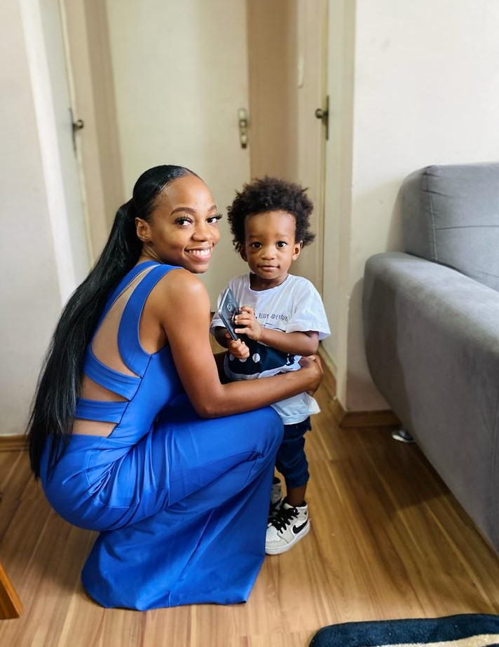

Sou a Cipriana Luís, muitos me tratam por Cipri, Ci. Sou formada em fisioterapia e durante a minha gradução me foi apresentada a área de tecnologia amei tanto que hoje estou em transição de carreira para a mesma. Atuamente estou participando do bootcamp na Generation Brasil para se tornar desenvolvedora full stack java. Sou apaixonada por esportes radicais porque gosto de sentir o pico da adrenalina rsrs, amo cozinhar, ouvir músicas, ler, estar em contato com a natureza e aprender coisas novas, isso inclui experimentar pratos, bebidas, conhecer culturas e fazer os pratos.
O ser humaninho na foto é meu filho, isso mesmo rsrs. Além de irmã e filha, sou mãe também dessa benção que atribuimos o nome de Ilai nome proveniente do hebraico que significa "exaltado". Não por ser agitado ou excessivo embora ele seja rsrs mas a escolha do nome se deu a elevado ao mais alto grau ou arrebatado.
Esses são os filmes que tenho dito como favoritos, por conta das histórias peculiares que apresentam